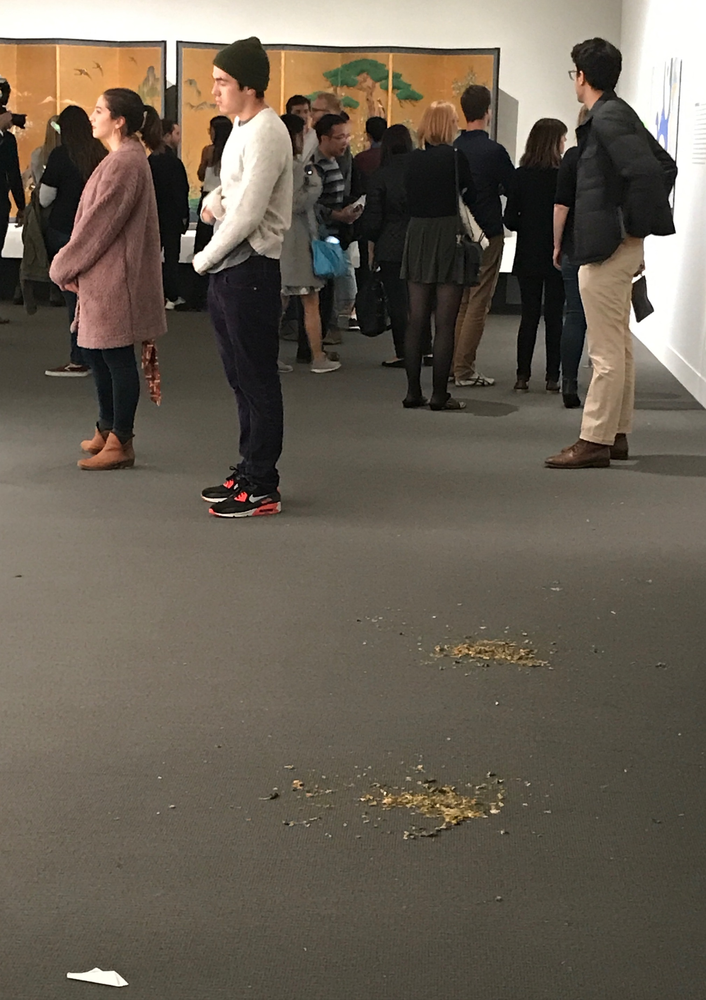
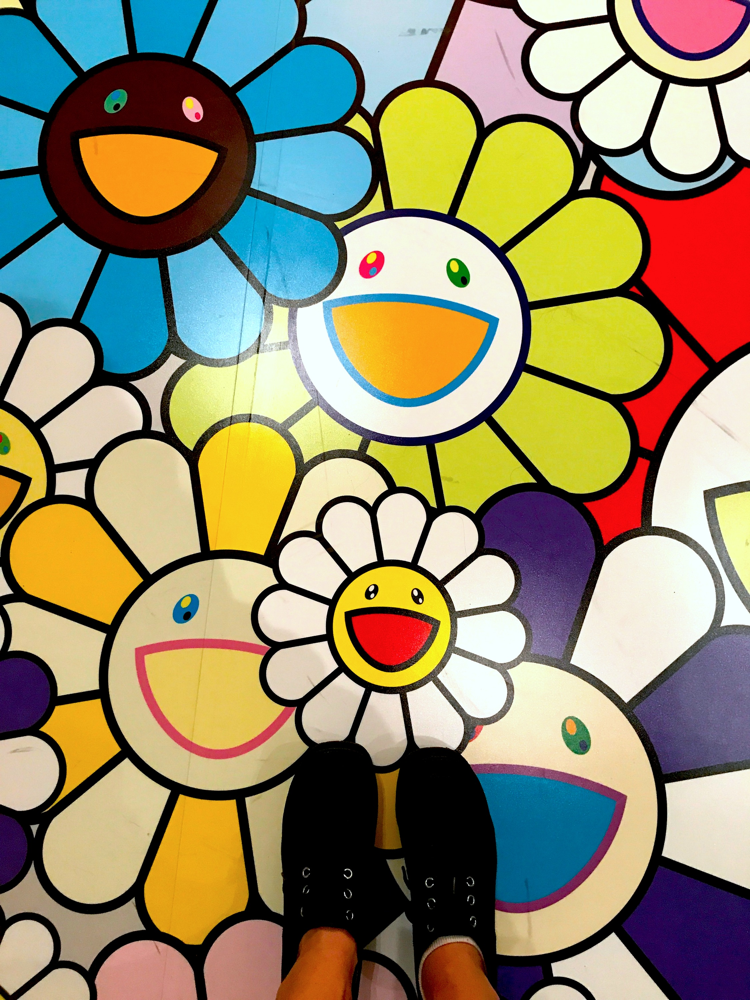
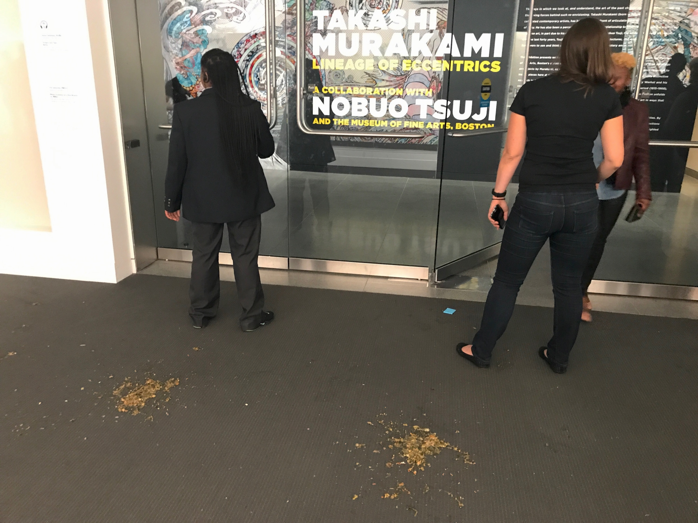
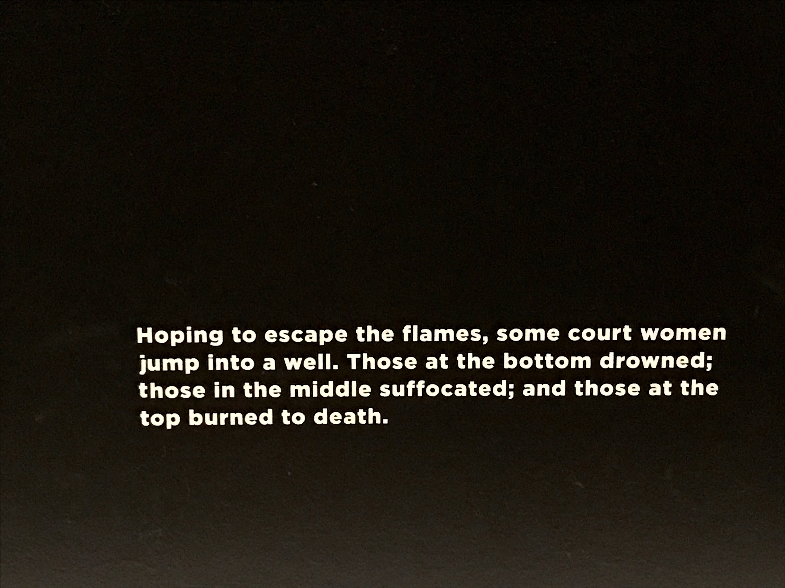
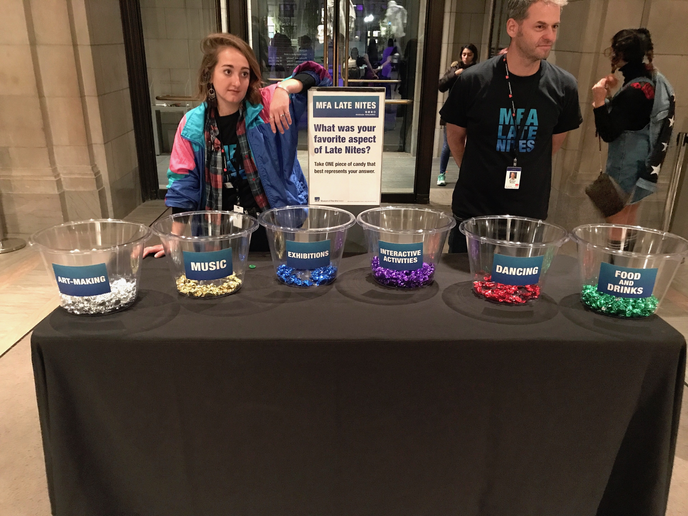

Leaving Harvard square, we saw three people in a car lean out all three different windows at once to energetically flip off the car behind them. The car behind them stopped and the driver got out. “Shit shit shit,” said Ariana, the Advocate’s Art Editor. “They’re gonna fight.” The guy stomped up to the driver’s window of the car in front of him and affectionately embraced the driver through his window. Our uber driver whistled. “I thought he was going to deck him,” he said.
A minute passed. “Do you even like Takashi Murakami?” my friend Sam, art board member, asked quietly. I thought about it.

“No.”
“Me either.”
But there we were, suddenly at the MFA. There were a lot of bright lights, and a lot of people smoking out front where signs said you weren’t supposed to smoke. We trekked on over two lawns, a parking lot, and the ramp for trucks with large deliveries to get to the press entrance. The scene: artsy yuppies, and artsier yuppies. Maybe toss in a couple actual bona-fide art students (are we in that category? All of them looked like the people I encountered on the street in Bushwick this summer and felt endemically less cool than). All of them, except the people I expected were art students, were taking selfies in this relatively visually uninteresting hallway of the contemporary wing. We took a selfie. I ponied up for a $9 glass of wine and we stood in the general vicinity of our first of the night’s three DJ booths. Men were leading that dance where you move your fists in circles around each other in front of your chest.
We went upstairs. The Rothko exhibit was closed, and so was the Annette Lemieux. “Aw,” said Ariana, and crouched as if to crawl under the stanchion keeping us back from the glass door.
We looped back downstairs and walked through the Works on Paper room and the Art of Asia, Oceania, and Africa wing to get to the rotunda, and then emerged into the large room with the café and the lime green Dale Chihuly piece. It was packed, thanks to the second of the three DJs. Projected smiling rainbow flowers fifteen feet in diameter and made of light rotated in slow motion above our heads.
We decided it was time to see the art. Downstairs a group of people were gathered around a girl sitting on the floor, wringing their hands. We opened the double doors and walked promptly into two guards in eagle stance. My knee-jerk reaction was “performance art?” and then one of them looked me in the eye and said “Watch where you step.” I looked down.

What was most interesting about the two pools of vomit behind the guards was that there were two of them, and that they were equally sized, about five feet apart. You imagined that the poor girl had opened the doors, seen the massive painting behind her, and out of sheer revulsion had emptied the contents of her stomach on the carpet. And then she had looked back up, moved five feet to the right to get a different angle on the piece, and been overcome with aesthetic nausea once again. And then they had removed her.
I think the vomit put us in a flippant mood toward the art. “It’s covered in dust” said one of us about one of the Superflat works. “Dust!” We debated the wall texts. I spent a long time looking at the Heiji Scroll. I liked this caption especially. It was short and to the point.

The show bottlenecked in Flower Lamps. A lot of people were lying on the flower-covered floor of the installation having new profile pictures taken from above. The wall next to it had text that said “If you don’t share a photo from this exhibition, did you really visit? Above the text, there were four circles with the logos of Facebook, Twitter, Instagram, and Snapchat. Our deities.
We retreated to the Buddhist temple on the second floor, where we stayed for fifteen minutes in total silence. We decided to leave.
At the exit, we were asked to take a colorful candy from a bucket which represented the aspect of the evening we had liked the most. There was silver for “ART-MAKING,” gold for “MUSIC,” blue for “EXHIBITIONS,” purple for “INTERACTIVE ACTIVITIES,” red for “DANCING,” and green for “FOOD AND DRINKS.” I hadn’t realized there had been art-making or interactive activities. Food and drinks was relatively full, which seemed like retribution for the exorbitant pricing. I took a red one, Sam took a blue, and Ariana took a purple. We popped them into their mouths. “Ew, grape,” said Ariana. “I didn’t realize they were different flavors.” She frowned. “Do you think I can get another?”
“You made your choice,” said Sam. Mine was strawberry.

Out front, super-powerful projectors were flooding the museum’s façade with spinning flowers and Murakami’s name in huge letters. The characteristic flash of emergency services was encroaching on the display as an ambulance pulled up, shortly followed by a fire truck. Someone was being wheeled around the sidewalk in a shopping cart, yelling “Wheeeee!” the whole way.